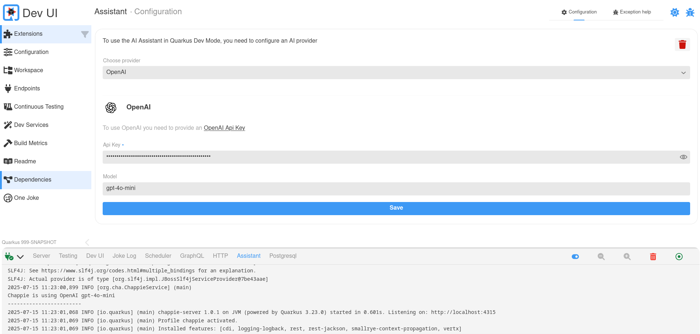
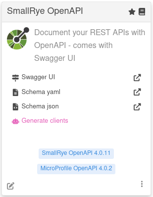
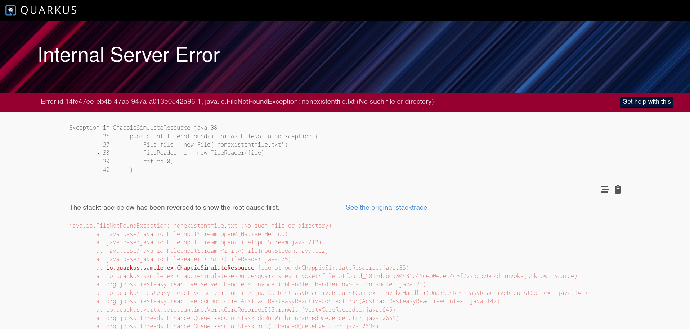

Dev Assistant
全般的な概要
Quarkus Dev Assistant は、 Quarkus 開発モードに直接組み込まれた AI 駆動のヘルパーです。トラブルシューティングを支援し、開発タスクをサポートすることで、生産性を向上させることを目的としています。
このアシスタントは開発モード内でのみ動作し、本番アプリケーションに影響を与えることはありません。
何ができますか?
Dev Assistant は以下のことをサポートします:
-
例外やスタックトレースのトラブルシューティング
-
サンプルクライアントコードの生成 (例: REST エンドポイント用の
javascriptクライアント) -
コードに対する Javadoc の生成
-
アプリケーションのテストコードの生成
-
アプリケーションのテストデータの生成
-
アプリケーション内の既存コードの解説
-
コード内の
//TODOセクションの補完 -
… さらに多くの機能が追加予定です!
Dev Assistant の追加方法
Quarkus プロジェクトで Dev Assistant を有効にするには、 quarkus-chappie エクステンションを追加します:
<dependency>
<groupId>io.quarkiverse.chappie</groupId>
<artifactId>quarkus-chappie</artifactId>
<version>${chappie-extension-version}</version> (1)
</dependency>| 1 | ${chappie-extension-version} を利用可能な最新バージョンに置き換えてください。最新バージョンは search.maven.org で確認できます。 |
追加したら、 Dev UI を開いてアシスタントの使用を開始してください。
| アシスタントのインターフェースは Quarkus の "core" で定義されていますが、その実装は Quarkiverse (Chappie) にあります。必要に応じて、アシスタントの代替実装を提供することも可能です。 |
設定とプロバイダー
デフォルトでは、アシスタントは設定されるまで無効になっています。サポートされている AI プロバイダーから選択できます:
-
OpenAI (ChatGPT、 Openshift AI、 Podman AI Lab など)
-
Ollama (
llama3などのローカルモデル)
設定は、 Dev UI のアシスタント設定ペインから直接行えます。以下のものが必要になります:
-
API キー (OpenAI の場合)
-
ローカルで実行中のモデル (Ollama または Podman AI の場合)
設定は ~/.quarkus/chappie/chappie-assistant.properties に保存されます。

使用方法
Dev Assistant は Dev UI のさまざまな部分にシームレスに統合されています。アシスタント機能が利用可能な場所は、特徴的な ピンク色のテーマ でハイライトされており、 AI 駆動のインタラクションを簡単に見つけることができます。
現在、アシスタント機能は以下で利用可能です:
-
Workspace ビュー
-
AI によるヘルプをサポートするエクステンションのページ
ピンク色でハイライトされたボタンやバッジを探してください。これらは Dev Assistant によるアクションであることを示しています。

例外ヘルプ
エラーや例外が発生すると、エラーページに Get help with this ボタンが表示されます。
これをクリックすると Dev UI のアシスタントパネルに直接移動し、関連するエラーのコンテキストが事前入力されます。これにより、アシスタントは以下のことを支援できます:
-
例外の意味を理解する
-
考えられる原因を提案する
-
問題の修正方法を推奨する
これにより、ログを手動でコピー & ペーストすることなく、迅速かつ集中したトラブルシューティングのワークフローが提供されます。

ログ内の例外ヘルプ
エラーページのサポートに加えて、 Dev Assistant は Quarkus ログ経由で例外の解決を支援することもできます。
例外が検出されると、 Quarkus ログで h キーを押して ショートカットメニュー を開くことができます。 Assistant 見出しの下に、以下のような新しいオプションが表示されます。
== Assistant
[a] - Help with the latest exception (Cannot invoke "String.length()" because "str" is null)a を押すと、分析のために例外がアシスタントに送信されます。
これは、表示されているページ以外や起動時に例外が発生した場合に特に便利です。アシスタントはエラーを分析し、他の場所に移動することなく、潜在的な原因や修正方法を提案します。
エクステンション開発者向けガイド
Quarkus エクステンションは、 Dev Assistant に寄与することで開発エクスペリエンスを向上させることができます。このセクションでは、以下を含む、エクステンションを Dev Assistant と統合する方法について説明します。
-
ワークスペースベースのアシスタントアクション
-
アシスタント専用ページ
-
JSON-RPC によるバックエンド統合
-
アシスタント対応コンポーネント用の UI 機能
-
Quarkus ログへの参加
エクステンションは、 Chappie に直接依存することなくアシスタント機能を定義できます。インターフェースと関連する構造体は assistant エクステンションにあります。
ワークスペースへの参加
通常の ワークスペースアクション と同じアプローチでワークスペースアイテムにアシスタント機能を追加できますが、 1 つだけ重要な違いがあります。それは .function(…) の代わりに .assistantFunction(…) を使用することです。
Action.actionBuilder()
.label("Joke AI")
.assistantFunction((a, p) -> { (1)
Assistant assistant = (Assistant) a;
Map params = (Map) p;
return assistant.assistBuilder()
.systemMessage(JOKE_SYSTEM_MESSAGE) (2)
.userMessage(JOKE_USER_MESSAGE) (3)
.variables(params)
.responseType(ExpectedResponse.class) (4)
.assist();
})
.display(Display.split)
.displayType(DisplayType.markdown)
.filter(Patterns.JAVA_SRC));
//...
final record ExpectedResponse(String result, String markdown) {
}| 1 | assistantFunction を使用して、 Assistant インスタンスと 入力 パラメーターを受け取ります。 |
| 2 | アシスタントの動作をガイドするために、オプションの システムメッセージ を提供します。 |
| 3 | プライマリプロンプトとして ユーザーメッセージ を提供します。 |
| 4 | 期待されるレスポンス構造を定義するクラスを提供します。 |
アシスタントページ
Dev UI にスタンドアロンのアシスタント駆動ページを追加するには、 CardPageBuildItem と Page.assistantPageBuilder() を使用します。
cardPageBuildItem.addPage(Page.assistantPageBuilder() (1)
.title("AI Joke")
.componentLink("qwc-jokes-ai.js"));| 1 | アシスタントページビルダーを使用します。 |
バックエンドとの通信
ランタイム および デプロイメント クラスパスの両方に対して、 標準的な Dev UI JSON-RPC パターンを使用してバックエンドコードからアシスタントを呼び出すことができます。
ランタイムクラスパスに対する JsonRPC
ランタイムクラスパスの JsonRpcService でアシスタントを使用するには、 Assistant インターフェースが利用可能であることを確認する必要があります。
<dependency>
<groupId>io.quarkus</groupId>
<artifactId>quarkus-assistant-dev</artifactId>
</dependency>その後、次のように Assistant を注入できます。
public class JokesJsonRPCService {
@Inject
Optional<Assistant> assistant; (1)| 1 | アシスタントをオプションとして注入します。これはプロバイダーが追加され設定されている場合にのみ存在します。 |
これで、任意の JsonRPC メソッドでこのアシスタントを使用できます。例:
public CompletionStage<Map<String, String>> getAiJoke() {
if (assistant.isPresent()) {
return assistant.get().assistBuilder()
.userMessage("Tell me a funny joke")
.responseType(JokeResponse.class) (1)
.assist();
}
return CompletableFuture.failedStage(new RuntimeException("Assistant is not available"));
}
//...
final record JokeResponse(String joke) {}| 1 | 期待されるレスポンス構造を定義するクラスを提供します。 |
デプロイメントクラスパスに対する JsonRPC
デプロイ時 のコードでは、 assistant-deployment-spi を追加する必要があります:
<dependency>
<groupId>io.quarkus</groupId>
<artifactId>quarkus-assistant-deployment-spi</artifactId>
</dependency>次に BuildTimeActionBuildItem を使用し、 .addAssistantAction(…) を介してアシスタントアクションを登録します。
BuildTimeActionBuildItem bta = new BuildTimeActionBuildItem();
bta.actionBuilder()
.methodName("getAIJokeInDeployment")
.assistantFunction((a, p) -> { (1)
Assistant assistant = (Assistant) a;
return assistant.assistBuilder()
.userMessage(USER_MESSAGE)
.variables(p)
.responseType(JokeResponse.class) (2)
.assist();
}).build());
buildTimeActionProducer.produce(bta);
//...
final record JokeResponse(String joke) {}| 1 | アシスタントコンテキストにアクセスするために、 function の代わりに assistantFunction を使用します。 |
| 2 | 期待されるレスポンス構造を定義するクラスを提供します。 |
UI におけるアシスタントの状態
Web コンポーネントでアシスタント UI を条件付きでレンダリングするには、 アシスタントの状態 を使用してアシスタントの状態を確認できます。状態は以下のいずれかになります。
-
notAvailable: アシスタントの実装 (Chappie など) が存在しません。
-
available: アシスタントは利用可能ですが、まだ設定されていません。
-
ready: アシスタントが設定され、使用可能な状態です。
ページでこの状態を使用するには:
import { observeState } from 'lit-element-state'; (1)
import { assistantState } from 'assistant-state'; (2)
export class QwcExtensionPage extends observeState(LitElement) { (3)| 1 | LitState ライブラリーから observeState をインポートします。 |
| 2 | 関心のある状態 (この場合はアシスタントの状態) をインポートします。 |
| 3 | LitElement を observerState でラップします。 |
これで、ページのどこからでもアシスタントの状態にアクセスできるようになります。その状態が変化すると、ローカルの状態とまったく同じように動作し、ページの関連部分が再レンダリングされます。
render() {
if(assistantState.current.isConfigured){
return html`<div class="assistantfeature">
<span> Magic happends here</span>
</div>`;
}
}アシスタントのテーマと UI コンポーネント
他の Dev Assistant 機能と視覚的な一貫性を保つために、以下のコンポーネントとスタイルを使用してください。
-
<qui-assistant-button>: ロボットアイコンが付いた、スタイル済みのピンク色のボタン。 -
<qui-assistant-warning>:"Quarkus assistant can make mistakes. Check responses."というテキストを含む標準的な警告メッセージ。 -
<qui-assistant-chat>: 現在のチャット画面へディープリンクするボタン。
アシスタントのテーマカラーを適用したい場所であればどこでも、 CSS 変数 --quarkus-assistant を使用することもできます。
Quarkus ログへの参加
エクステンションは Dev Assistant と統合することで、対話型の Quarkus ログメニュー にエントリーを追加できます。これにより、開発者はキーボードショートカットを使用して、 Quarkus ログからアシスタント駆動のアクションを直接呼び出すことができます。
まず、エクステンションの デプロイメント モジュールに quarkus-assistant-deployment-spi を追加します。
<dependency>
<groupId>io.quarkus</groupId>
<artifactId>quarkus-assistant-deployment-spi</artifactId>
</dependency>次に、 @BuildStep で AssistantConsoleBuildItem を作成します。
@BuildStep
AssistantConsoleBuildItem createCliAssistantEntry() {
return AssistantConsoleBuildItem.builder()
.description("Let assistant tell you a joke") (1)
.key('@') (2)
.function((a) -> {
return a.assistBuilder()
.userMessage("Tell a funny joke")
.responseType(JokeResponse.class) (3)
.assist();
})
.build();
}
//...
final record JokeResponse(String joke) {}| 1 | これは、ログメニューの Assistant セクションに表示される説明です。 |
| 2 | これは、アシスタント機能をトリガーするキーボードショートカットです。 |
| 3 | 期待されるレスポンス構造を定義するクラスを提供します。 |
追加すると、ログのショートカットメニューの Assistant 見出しの下に新しいエントリーが表示されます。
== Assistant
[a] - Help with the latest exception (none)
[@] - Let assistant tell you a jokeユーザーが @ を押すと、 Dev Assistant が呼び出され、ログ内で応答します。
=========================================
Talking to Quarkus Assistant, please wait
..
.
Why do programmers prefer dark mode? Because light attracts bugs!この機能は、 Quarkus ログを通じて AI アクションへのクイックアクセスを提供する、シンプルで優れた方法です。